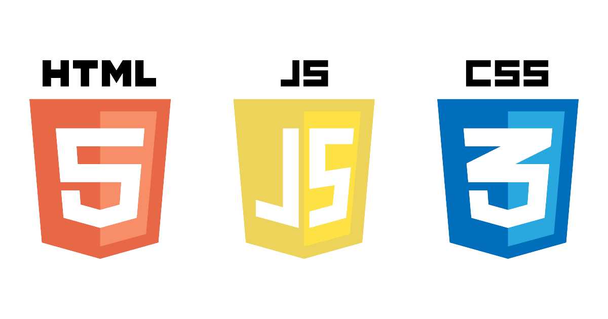

Je suis à la recherche d'un emploi à temps partiel en développement de jeux vidéo!
Passionnée par la création vidéoludique et la programmation en général, j'espère pouvoir m'épanouir dans ce milieu.
Dans le futur proche, j'aimerais participer régulièrement à des Game Jam afin d'améliorer mes compétences en programmation C#.
Si on regarde plus loin, je rêve de devenir programmeuse d'outils pour des jeux vidéo pour enfants.
